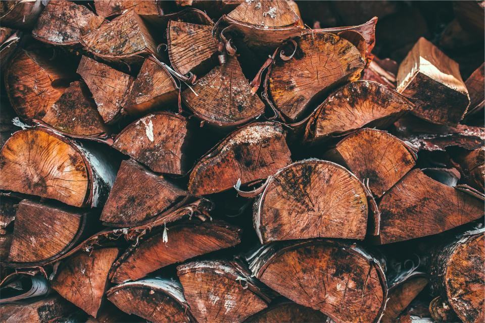

Priser
Vi lämnar alltid fast pris efter en kostnadsfri besiktning.
Gårdspriser
- Vanligast
Haginventering
Genomgång och märkning av giftiga träd.
2 900 krupp till fem hagar- Karta över hagarna
- Färgband på varje träd att fälla
- Åtgärdslista i prioritetsordning
- Avräknas vid fällning
Fällning vid hage
Fällning och bortforsling av giftiga träd.
4 600 krträd upp till 15 m- Flishugg på plats i hagen
- Flisen bortkörd från hagen
- Fröplantor uppryckta runt trädet
- Stängslet skyddas
Allébeskärning
Kronhöjning till 4,5 meters fri höjd.
fr. 1 300 krper träd- Klättring eller lift efter läge
- Döda grenar bort
- Riset flisat vid vägkanten
- Hjälp med dispens vid behov
Fler priser
| Arborist på gården, timpris | 660 kr/tim |
|---|---|
| Traktor med flishugg | 950 kr/tim |
| Uppryckning av fröplantor | fr. 1 200 kr/hage |
| Plantering av skuggträd | fr. 2 400 kr/st |
| Förnyelse av läplantering | fr. 180 kr/löpmeter |
| Stubbfräsning | 900 kr/stubbe |
| Besök med genomgång av hagarna | 900 kr |
Priser inklusive moms. RUT gäller bara privat bostadstomt.
Från karta till säker hage
- 1

Telefon och karta
Berätta hur många hagar och hästar du har. Skicka gärna en karta över gården.
- 2

Inventering
Karin går igenom hagar, alléer och gårdsträd och märker allt som behöver åtgärdas.
- 3

Karta och fast pris
Du får en karta och ett fast pris. Brådskande giftiga träd prioriteras före betessläppet.
- 4

Utförande
Vi fäller, rycker upp fröplantor och flisar på plats. Hästarna behöver bara flyttas från den hage där vi arbetar.
Frågor om hagar och giftiga träd
Hittar du inte svaret? Ring eller mejla oss.
Vilka träd är giftiga för hästar?
Tysklönn (sykomorlönn), idegran, robinia och i större mängd ekollon och bokollon. Även rhododendron och buxbom i rabatter nära hagen är giftiga.
Är vanlig skogslönn farlig?
Skogslönn är inte kopplad till atypisk myopati på samma sätt som tysklönn. Vi visar skillnaden på blad och frön vid besöket.
När är riskerna störst?
På hösten när fröna faller och på våren när groddplantorna kommer upp. Därför inventerar vi helst på sensommaren.
Räknas gårdens fällning som RUT?
Om gården är din bostad och inte drivs som företag kan arbetet på tomten ge RUT. Jordbruksföretag faktureras utan RUT, men momsen är avdragsgill.
Behöver jag dispens för att fälla i allén?
Alléer i jordbrukslandskapet är biotopskyddade. Fällning kräver dispens från länsstyrelsen, men beskärning gör det oftast inte.
Måste hästarna flyttas?
Bara från den hage där vi arbetar just den dagen. Vi planerar arbetet hage för hage.